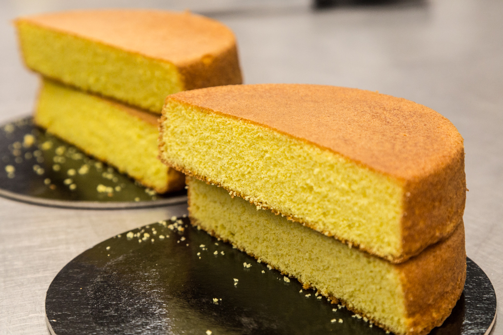

Pan di Spagna
Ingredienti per 2 rotoli
- 6 uova
- 150 g di zucchero
- 150 g di farina
- 1 bustina di lievito
- un pizzico di sale
- Facoltativo: scorza di limone grattugiata o estratto di vaniglia
Preparazione
1. Preriscalda il forno a 180°C e imburra e infarina una teglia rotonda da 22 cm di diametro.
2. Monta le uova con lo zucchero in una ciotola capiente, utilizzando una frusta elettrica. Continua a montare per almeno 10 minuti, fino a ottenere un composto chiaro e spumoso. Questo passaggio è cruciale per incorporare aria, che darà al Pan di Spagna la sua caratteristica leggerezza.
3. A parte, setaccia la farina e il lievito insieme, e unisci un pizzico di sale.
4. Aggiungi la farina e il lievito al composto di uova, un po' alla volta, mescolando delicatamente dal basso verso l'alto con una spatola o un cucchiaio di legno. Questo eviterà di smontare le uova.
5. (Facoltativo) Aggiungi la scorza di limone grattugiata o un po' di estratto di vaniglia per un aroma extra.
6. Versa il composto nella teglia preparata, livellando la superficie con una spatola.
7. Inforna a 180°C per circa 20 minuti, o fino a quando uno stecchino inserito nel centro del Pan di Spagna esce pulito. Evita di aprire il forno durante la cottura per non far sgonfiare il dolce.
8. Una volta cotto, lascia raffreddare nella teglia per 10 minuti, poi trasferiscilo su una griglia per farlo raffreddare completamente.